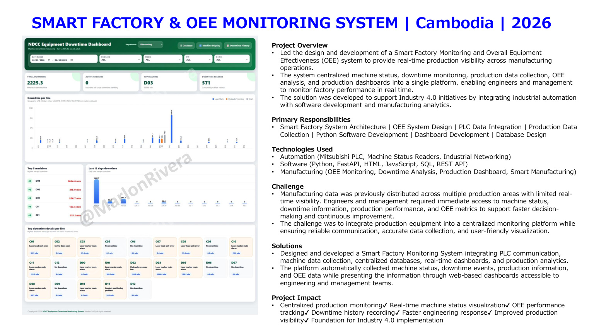

Smart Factory • Cambodia • 2026
Smart Factory & OEE Monitoring System
PLC-integrated platform centralizing machine status, downtime, OEE and production analytics.

Overview
Engineering context
Led development of a centralized Smart Factory and OEE platform integrating status, downtime, production data and dashboards.
Responsibilities
My contribution
System architecture, OEE design, PLC integration, data collection, Python development, dashboards and database design.
Challenge
What needed to be solved
Manufacturing information was distributed across departments with limited real-time visibility.
Solution
Engineering approach
Created centralized databases and web dashboards that automatically collect machine status, downtime and OEE information.
Impact
Project outcomes
- Centralized production visibility
- Real-time status monitoring
- Downtime history
- Faster engineering response
Lessons Learned
Engineering reflection
This project reinforced the importance of validating process requirements before finalizing the machine concept, involving production and maintenance teams early, and confirming performance through structured testing before handover.